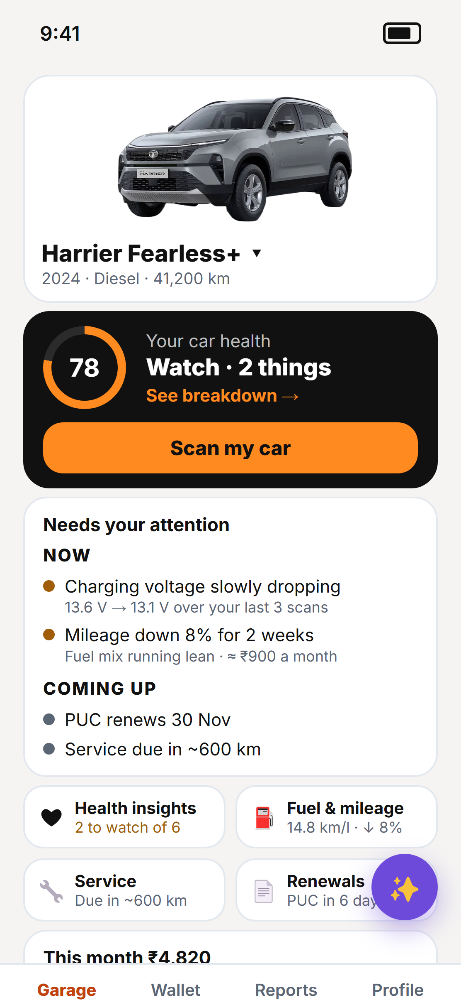
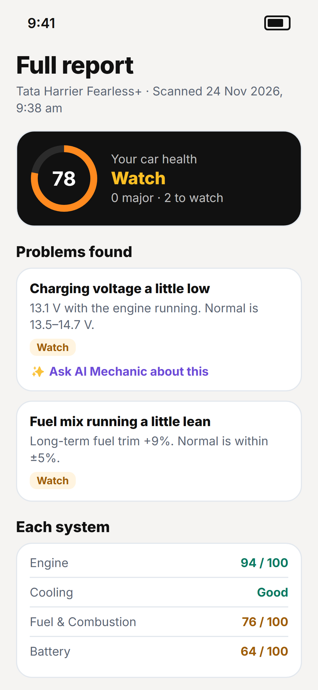
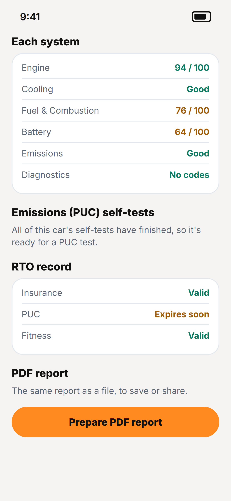

One frame from the homepage video (second 15), with the new My Garage screen put onto the phone. These are still mockups, not a new render. The video also has a second phone shot (seconds 16–18) showing the old report screen, which needs the same change.
A · What the video shows todayThe old Home screen: "Pro" badge, "34 sensors", Scan and AI Mechanic tabs, an Explore grid. None of these are in the app any more, whatever the colour.B · New My Garage, white (as in the app)Matches what people see when they open the app. The bright screen stands out against the dark cabin, and the black health card keeps some of the dark look you like.C · New My Garage, kept blackSame new layout, dark colours. Moodier and blends into the cabin, but it's a version of the app that doesn't exist.
Chosen: white, like the app. Screens for the video
Full phone resolution (1112 × 2408). Shot 1 (about 13–16 s): My Garage. Shot 2 (about 16–18 s): the Full report, then scrolled down to the "Prepare PDF report" button for the tap. The black versions (*-dark.png) are kept in this folder but aren't the ones to use.

Shot 1 · My Garagegarage-screen-light-car.png

Shot 2 · Full reportreport-top-light.png

Shot 2 · Scrolled to the PDF buttonreport-pdf-light.png